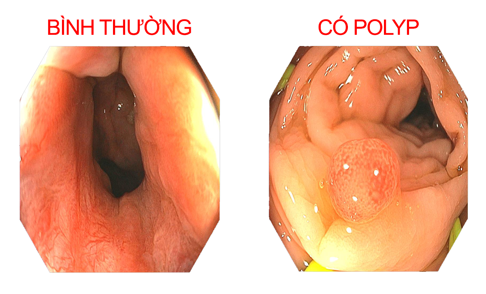
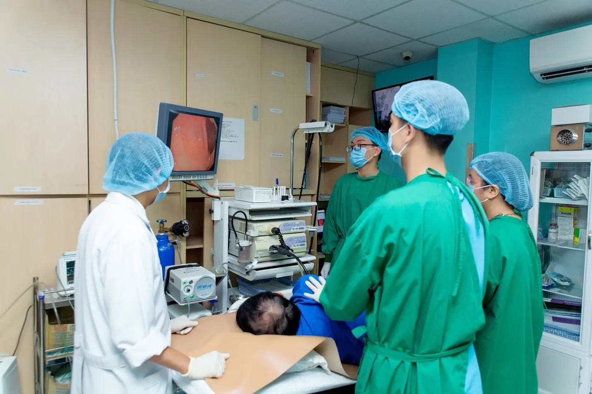

Nội Soi Đại Tràng: 5 Điều Quan Trọng Cần Biết Từ Bác Sĩ Chuyên Khoa
5 Điều Bạn Cần Biết Trước Khi Nội Soi Đại Tràng - Lời Khuyên Từ Bác Sĩ Tiêu Hóa
Nội soi đại tràng vẫn được coi là "tiêu chuẩn vàng" trong chẩn đoán các bệnh lý tiêu hóa, đặc biệt là ung thư đại trực tràng. Tuy nhiên, nhiều người vẫn còn e ngại khi nghĩ đến thủ thuật này.
Bài viết dưới đây chia sẻ những kinh nghiệm thực tế từ các bác sĩ chuyên khoa tiêu hóa, giúp bạn chuẩn bị tốt nhất cho quá trình nội soi - yếu tố quyết định đến độ chính xác và an toàn của thủ thuật.
1. Nội soi đại tràng là gì? Tại sao cần làm?
Nội soi đại tràng là kỹ thuật cho phép bác sĩ "nhìn tận mắt" bên trong lòng đại tràng bằng một ống soi mềm có gắn camera. Những hình ảnh sắc nét này giúp phát hiện sớm nhiều vấn đề mà không phương pháp chẩn đoán nào khác làm được, cụ thể như:
- Polyp đại tràng (có thể phát triển thành ung thư nếu không được phát hiện và cắt bỏ kịp thời)
- Vết viêm loét, xuất huyết
- Tổn thương, nứt nẻ niêm mạc
- Khối u ác tính giai đoạn sớm

Vì sao nội soi đại tràng vượt trội hơn các phương pháp khác?
Khác với siêu âm hay chụp CT Scanner, nội soi đại tràng cho phép:
- Quan sát rõ từng chi tiết nhỏ trong lòng đại tràng
- Phát hiện được những tổn thương chỉ vài milimet
- Xử lý ngay lập tức: sinh thiết
Đáng báo động: Số ca ung thư đại trực tràng ở người trẻ đang tăng đáng kể tại Việt Nam. Điều đáng tiếc là nhiều người chỉ đi khám khi bệnh đã tiến triển. Nội soi định kỳ có thể phát hiện và xử lý từ giai đoạn tiền ung thư, nâng cao cơ hội sống sót cho bệnh nhân.
Đặt lịch tư vấn nội soi đại tràng
2. Tại sao việc chuẩn bị trước nội soi rất quan trọng
Bạn có biết rằng việc chuẩn bị đúng cách trước nội soi là yếu tố quyết định đến hiệu quả của cả quá trình?
Lý do ruột phải thật sạch
Một đại tràng sạch sẽ giúp bác sĩ:
- Thấy rõ mọi ngóc ngách của niêm mạc ruột
- Không bỏ sót polyp nhỏ (dù chỉ 2-3mm)
- Rút ngắn thời gian nội soi, giảm khó chịu cho bệnh nhân
Những điều cần báo trước cho bác sĩ
Nếu bạn đang dùng:
- Thuốc chống đông máu (aspirin, warfarin, clopidogrel...)
- Thuốc hạ huyết áp
- Thuốc điều trị tiểu đường
- Thuốc tim mạch
➤ Hãy thông báo với bác sĩ ít nhất 1 tuần trước ngày nội soi. Một số loại thuốc cần điều chỉnh liều lượng hoặc tạm ngưng để đảm bảo an toàn khi nội soi.
Lưu ý quan trọng: Đừng tự ý ngưng thuốc nếu chưa có chỉ định của bác sĩ. Việc này có thể gây nguy hiểm!
Làm quen với ý tưởng "nội soi không đau"
Nhiều người vẫn lo lắng về đau đớn khi nội soi. Thật may mắn, hiện nay dịch vụ nội soi không đau (gây mê/tiền mê) đã phổ biến, giúp bệnh nhân hoàn toàn thoải mái trong suốt quá trình. Bạn sẽ chỉ cảm nhận được khi mọi thứ đã kết thúc.
3. Các bước chuẩn bị cốt lõi cho ngày nội soi
3.1. Chế độ ăn trước nội soi - "Bạn ăn gì quyết định thấy gì"
Một ngày trước nội soi:
- Nên ăn: Những thức ăn dễ tiêu hóa như cháo trắng loãng, súp trong đã lọc bỏ cặn, nước trong không màu, cơm trứng, cơm đậu hũ,...
- Tránh xa: Rau xanh, hoa quả có hạt (như thanh long, chia seed), ngũ cốc nguyên hạt, thức ăn nhiều xơ, thịt các loại
Lịch ăn cụ thể:
- Buổi sáng và trưa: Ăn nhẹ, thức ăn dễ tiêu
- Sau 5 giờ chiều: Bắt đầu nhịn ăn hoàn toàn, chỉ uống nước trong (nước lọc, nước dừa tươi, nước đường pha loãng)
Lưu ý: Tránh uống nước có màu, sữa, chocolate vì có thể bị nhầm với máu trong quá trình nội soi. Điều này đôi khi khiến bác sĩ khó phân biệt giữa dịch màu và tổn thương thật.
3.2. Làm sạch ruột - Bí quyết quyết định thành công
Làm sạch ruột chính là "chìa khóa vàng" quyết định chất lượng nội soi. Nếu ruột không đủ sạch, những polyp nhỏ có thể bị che khuất và bỏ sót - điều này vô cùng nguy hiểm.
Hướng dẫn chi tiết:
- Sáng sớm ngày nội soi (hoặc tối hôm trước theo chỉ định bác sĩ), bắt đầu uống thuốc làm sạch ruột (thường là Fortrans, Tranfast)
- Pha 2 gói thuốc với 2 lít nước mát (không quá lạnh)
- Uống từ từ trong khoảng 2 giờ (khoảng 1 cốc mỗi 10-15 phút)
- Đi lại nhẹ nhàng trong nhà để thuốc phát huy tác dụng tốt hơn
- Chuẩn bị tinh thần sẽ đi vệ sinh nhiều lần
Dấu hiệu nhận biết ruột đã sạch:
Sau khi uống hết thuốc xổ, bạn sẽ đi tiêu nhiều lần. Mục tiêu cuối cùng là phân ra trong như nước, không còn chất cặn.
Kinh nghiệm thực tế: Uống thuốc trong phòng gần nhà vệ sinh vì thuốc có thể tác dụng nhanh (15-30 phút sau khi bắt đầu uống). Nếu sau khi uống hết thuốc mà phân vẫn còn màu vàng hoặc có cặn, hãy báo ngay cho nhân viên y tế. Bạn có thể cần thêm thuốc xổ.
3.3. Danh sách kiểm tra trước khi đến bệnh viện
✅ CMND/CCCD và thẻ BHYT (nếu có)
✅ Kết quả xét nghiệm trước đó (nếu có)
✅ Danh sách thuốc đang dùng (cực kỳ quan trọng)
✅ Người thân đi cùng (khuyến khích đối với nội soi gây mê)
✅ Mặc quần áo rộng rãi, thoải mái
✅ Để trang sức, vòng đeo tay ở nhà (tránh thất lạc)
✅ Chuẩn bị tinh thần thoải mái (giảm lo âu)
4. Những điều cần làm sau khi nội soi đại tràng
4.1. Dành thời gian nghỉ ngơi đầy đủ
- Nếu nội soi có gây mê: Cần nghỉ tại phòng hồi tỉnh 30-60 phút sau thủ thuật
- Nội soi không gây mê: Thường có thể ra về sau 5-10 phút nếu không có biến chứng
-
Lưu ý quan trọng: Sau nội soi gây mê, bệnh nhân có thể tự lái xe ra về khi hoàn toàn tỉnh táo. Tốt nhất, khuyến khích có người thân đi cùng để đưa đón, đảm bảo an toàn cho bạn
4.2. Những cảm giác bình thường sau nội soi - Đừng lo lắng
Sau nội soi, một số cảm giác khó chịu hoàn toàn bình thường và thường tự biến mất sau vài giờ:
- Đầy hơi, chướng bụng nhẹ (do bơm hơi trong quá trình soi)
- Cảm giác muốn đi vệ sinh
- Đi ngoài lỏng hoặc có hơi
4.3. Dấu hiệu nguy hiểm cần báo động
Liên hệ bác sĩ hoặc đến cấp cứu ngay nếu gặp một trong các triệu chứng:
- Đau bụng dữ dội, càng lúc càng tăng
- Sốt cao trên 38°C, ớn lạnh
- Đi ngoài ra máu đỏ tươi hoặc phân đen bất thường
- Chóng mặt, choáng váng kéo dài
4.4. Chăm sóc đặc biệt khi được cắt polyp
Nếu bác sĩ đã cắt polyp trong quá trình nội soi:
- Ăn thức ăn mềm, dễ tiêu trong 2-3 ngày đầu (cháo, súp, cơm nát...)
- Không vận động mạnh, nâng vật nặng trong 2 tuần nếu kích thước trên 5mm
- Kiêng rượu bia, đồ uống có cồn, cafe... ít nhất 2 tuần nếu kích thước trên 5mm
- Uống đủ thuốc theo đơn bác sĩ (thường là thuốc chống viêm hoặc kháng sinh)
Lời khuyên tâm huyết: Đừng bỏ qua lịch tái khám và nội soi định kỳ, nhất là khi bạn đã từng có polyp hoặc gia đình có người mắc ung thư đại trực tràng. Chính sự kiên trì này sẽ giúp bạn phát hiện bệnh từ giai đoạn sớm nhất.
5. Giải đáp thắc mắc thường gặp về nội soi đại tràng
Nội soi đại tràng có đau lắm không?
Trước đây, nội soi đại tràng thường gây khó chịu. Nhưng giờ đây, với dịch vụ nội soi tiền mê hoặc gây mê, bạn sẽ ngủ nhẹ trong suốt quá trình và chỉ tỉnh lại khi mọi thứ đã kết thúc. Đa số bệnh nhân đều ngạc nhiên về việc "không cảm thấy gì cả".
Tôi sẽ tốn bao nhiêu tiền cho một lần nội soi đại tràng?
Chi phí 2 triệu 9 chưa bao gồm thuốc xổ với Cận lâm sàng cho Phòng khám y tế Đại Phước. Bảo hiểm y tế có thể chi trả một phần đáng kể nếu có chỉ định của bác sĩ. Mọi thắc mắc, vui lòng để lại thông tin tư vấn hoặc liên hệ hotline để được hỗ trợ.
Thủ thuật nội soi kéo dài mấy phút?
Thủ thuật thường mất khoảng 15-30 phút. Tuy nhiên, bạn nên sắp xếp thời gian khoảng 2-3 giờ cho cả quá trình, bao gồm làm thủ tục, chuẩn bị, thực hiện và nghỉ ngơi sau nội soi.
Bao lâu thì nên nội soi đại tràng một lần?
- Người không có yếu tố nguy cơ: 5-10 năm/lần từ tuổi 45
- Người có người thân bị ung thư đại trực tràng: 3-5 năm/lần
- Người đã từng có polyp: 1-3 năm/lần (tùy loại polyp và số lượng)
Sau nội soi tôi có thể ăn gì?
Sau khi tỉnh táo hoàn toàn, bạn có thể bắt đầu với thức ăn lỏng như cháo loãng, súp, rồi dần chuyển sang thức ăn mềm. Tránh đồ ăn cay nóng, nhiều dầu mỡ, khó tiêu trong 24 giờ đầu để không làm niêm mạc ruột bị kích ứng.
Lời kết
Nội soi đại tràng là một trong những vũ khí hiệu quả nhất trong phòng ngừa và phát hiện sớm ung thư đại trực tràng. Dù có thể hơi phiền phức trong quá trình chuẩn bị, nhưng kết quả đạt được hoàn toàn xứng đáng - phát hiện và điều trị bệnh từ giai đoạn sớm nhất, khi tỷ lệ chữa khỏi còn cao.
Chỉ cần tuân thủ đúng chế độ ăn uống, sử dụng thuốc làm sạch ruột theo hướng dẫn, và những lưu ý nhỏ khác, bạn sẽ có trải nghiệm nội soi an toàn, hiệu quả và không đau đớn.
Hãy coi việc đi nội soi đại tràng định kỳ là món quà quý giá bạn dành cho sức khỏe của chính mình.

Thông tin liên hệ
 Phòng khám Đa khoa Đại Phước
Phòng khám Đa khoa Đại Phước
829 đường 3/2, phường 7, quận 11, TP. Hồ Chí Minh
☎️ Hotline tư vấn: 1900 599 941 – 0938 829 831
Hotline Phòng Nội Soi: 0971 317 030
⏰ Thời gian làm việc:
- Thứ Hai – Thứ Bảy: 07:00 – 11:30 | 13:00 – 16:30
- Chủ Nhật: 07:00 – 11:30 (chỉ buổi sáng)

Các tin khác

ĐĂNG KÝ NHẬN BẢN TIN

Phòng Khám Đa Khoa Đại Phước
- 829 đường 3 tháng 2, Phường Minh Phụng, Thành phố Hồ Chí Minh
- 1900 599 941 - 0938 829 831
- (028) 3955 7999
- info@ytedaiphuoc.vn
-

6:00 - 11:30 (Chủ Nhật)


GPKD số : 0312023683 cấp ngày: 29/10/2012 Bởi Sở Kế Hoạch và Đầu Tư TP.Hồ Chí Minh
Đại diện: Tống Nguyễn Diễm Hồng